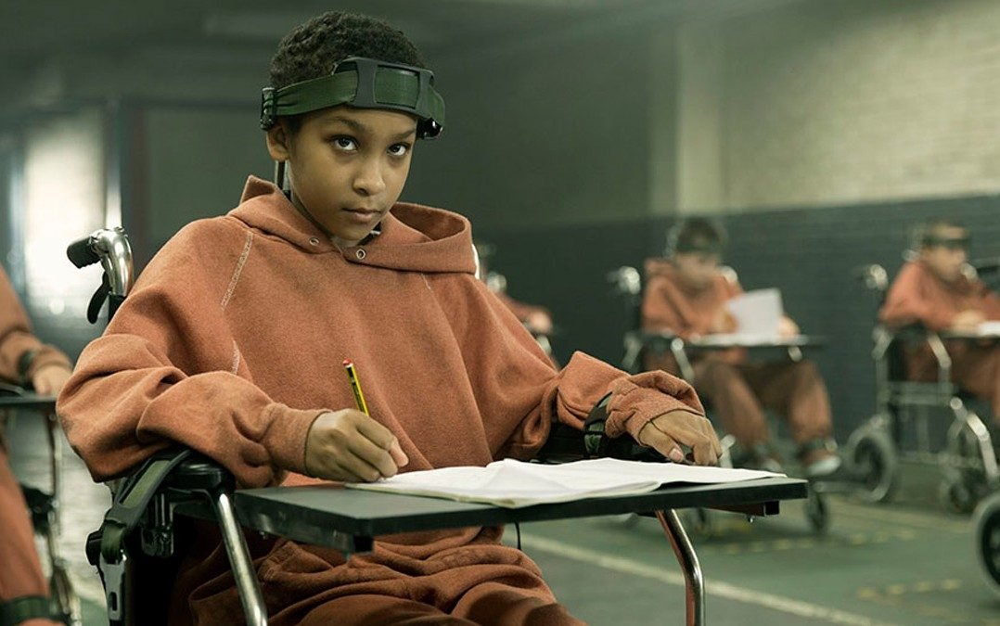
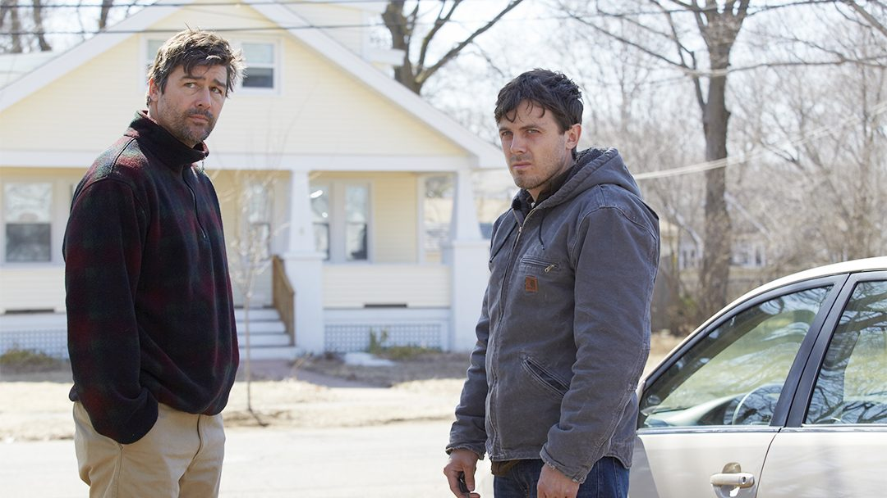

Le top des films 2017 (à fin mars)
This post was originally written in French.
Les "pas encore vus"
Jackie, Moonlight, Silence, Lion, Seuls, Fences, Logan, 20th Century Women, T2: Trainspotting, Chez nous, Skull Island, La confession, Rock'n Roll, Logan, Patients, Grave, Gold, Life, The edge of seventeen, Wrong elements, ...
Le top 2017


Nocturnal Animals, bande-annonce
The Lost City of Z, bande-annonce


The girl with all the gifts, bande-annonce

Manchester by the sea, bande-annonce
Mentions honorables
Weiner, bande-annonce, "documentaire sur la campagne d'Anthony Weiner pour l'élection municipale de New York en 2013. Ne sortira certainement pas sur nos écrans. 96% Sur Rotten Tomatoes, un documentaire fantastique sur une descente aux enfers. Sans compter les effets direct et indirects sur la campagne d'Hilary par l'intermédiaire de son épouse, Huma Abedin"